| 角色 | The Boss （Boss女王） |
The Sorrow （悲伤） |
Ocelot / Revolver Ocelot （山猫/奥赛洛特） |
Naked Snake / Big Boss （裸蛇/大Boss） |
Venom Snake （毒蛇） |
Solid Snake （固蛇） |
Liquid Snake （液体蛇） |
Solidus Snake （固相蛇） |
Kazuhira Miller （卡兹） |
Gray Fox （灰狐） |
EVA （爱娃） |
Zero （零少校） |
Sigint （信号） |
Para-Medic （帕拉米迪克） |
Paz Ortega （帕兹） |
Huey Emmerich （休伊） |
Quiet （静静） |
Otacon （奥塔康） |
Meryl Silverburgh （梅丽尔） |
Sunny （桑尼） |
Raiden （雷电） |
Doktor （医生） |
Blade Wolf （刃狼） |
Little John （小约翰） |
|---|---|---|---|---|---|---|---|---|---|---|---|---|---|---|---|---|---|---|---|---|---|---|---|---|
| 年份 | 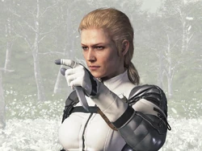 | 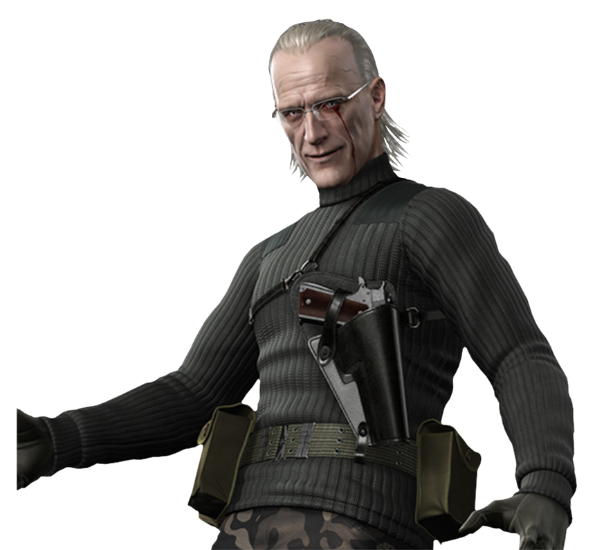 | 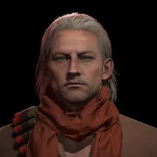 | 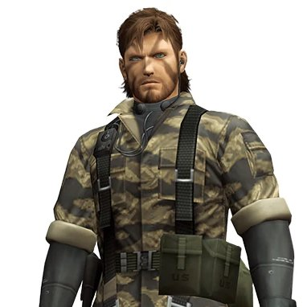 | 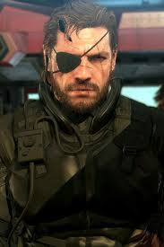 | 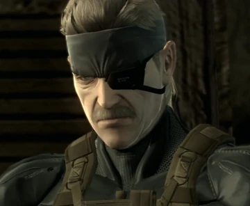 | 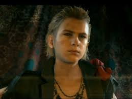 | 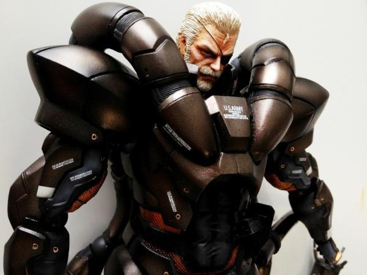 | 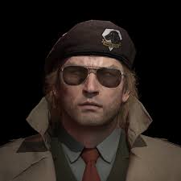 | 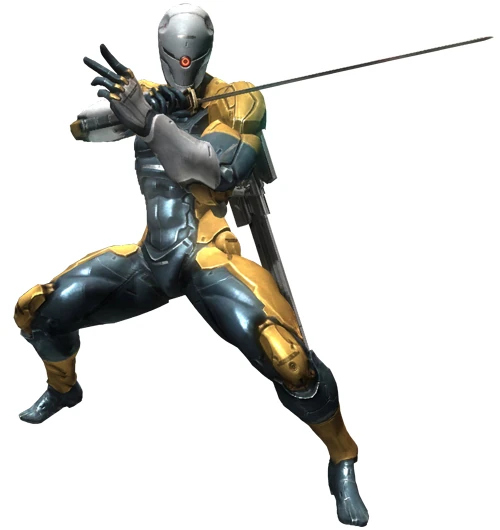 | 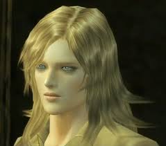 | 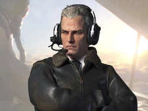 | 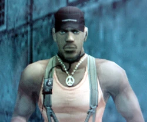 | 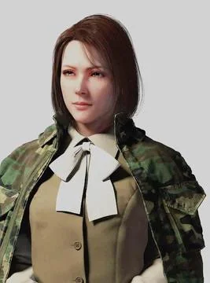 | 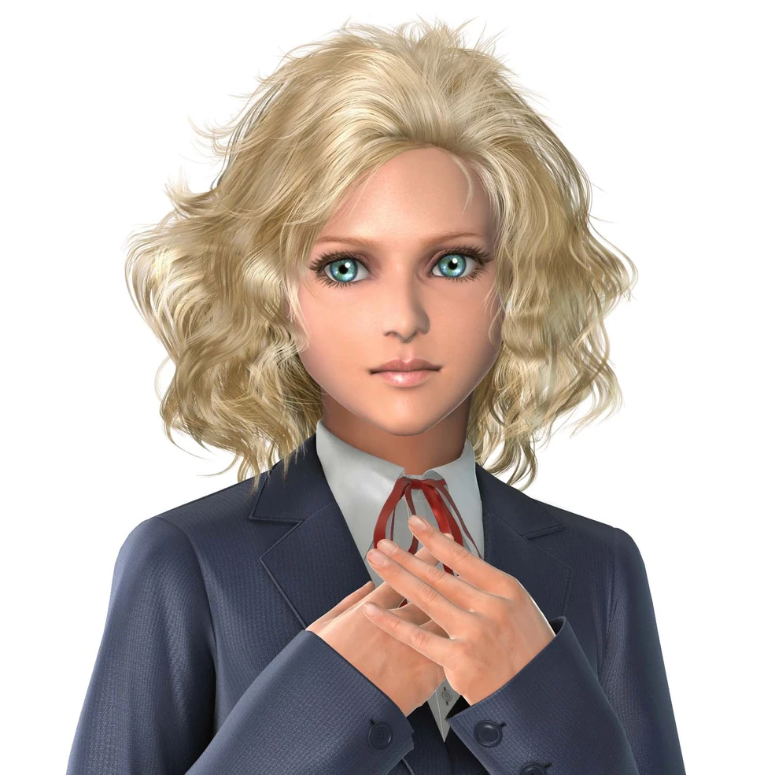 | 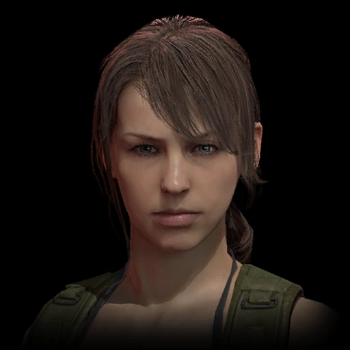 | 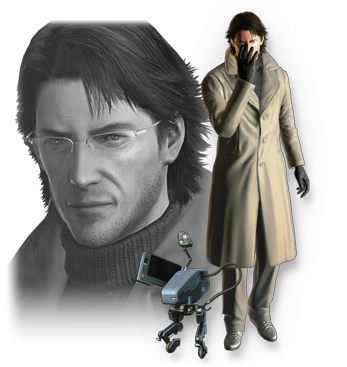 | 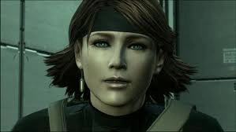 | 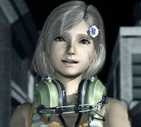 | 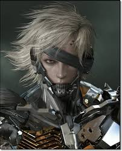 | 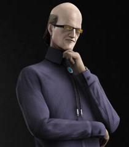 | 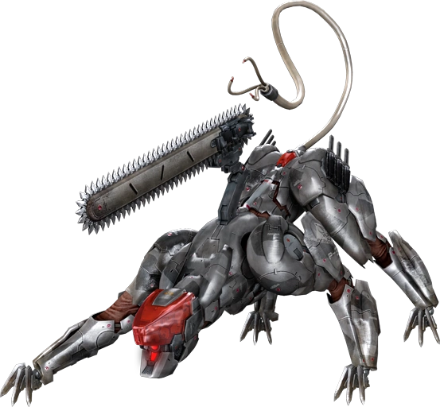 | 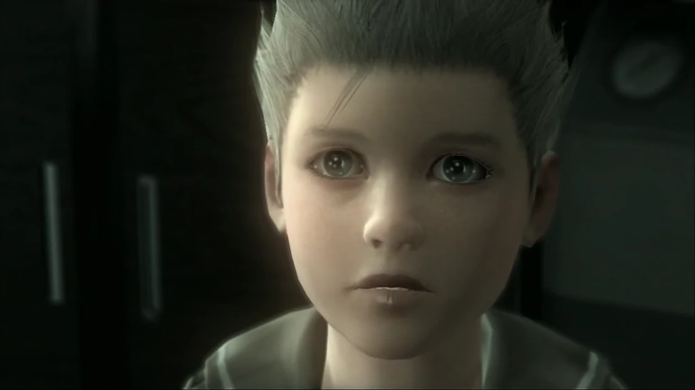 | |
| 1943 | 加入OSS并组建“眼镜蛇部队” | |||||||||||||||||||||||
| 1944 | 诺曼底战役剖腹产生下Ocelot（与The Sorrow） | 诺曼底战役诞下Ocelot（与The Boss） | 诺曼底战役出生（父母：The Boss & The Sorrow） | |||||||||||||||||||||
| 1952 | 招募Naked Snake成为弟子（与Naked Snake） | 被The Boss招募并接受训练（与The Boss） | ||||||||||||||||||||||
| 1960 | 创建爱国者（与The Boss·Big Boss） | |||||||||||||||||||||||
| 1964 | 执行Virtuous Mission并在Operation Snake Eater中牺牲（与Naked Snake·EVA·Ocelot·Sigint·Para-Medic） | 在Operation Snake Eater中阵亡化为灵魂引导Naked Snake（与The Boss·Naked Snake） | Operation Snake Eater与Naked Snake交锋（与The Boss·Naked Snake） | Operation Snake Eater击败The Boss获称号“Big Boss”（与The Boss·EVA·Ocelot·Sigint·Para-Medic） | Operation Snake Eater支援Naked Snake（与Naked Snake·The Boss） | Operation Snake Eater技术支援（与The Boss·Big Boss·EVA·Ocelot·Para-Medic） | Operation Snake Eater医疗支援（与The Boss·Big Boss·Sigint·Zero） | |||||||||||||||||
| 1970 | 被Big Boss收编FOXHOUND（与Big Boss） | 出任DARPA局长（与Zero） | ||||||||||||||||||||||
| 1972 | DNA用于Les Enfants Terribles计划（与Zero·Para-Medic·Solid系三兄弟） | 克隆诞生（与Big Boss·Zero） | 克隆诞生（与Big Boss·Zero） | 克隆诞生（与Big Boss·Zero） | 主导Les Enfants Terribles克隆计划（与Big Boss·Para-Medic·Sigint） | 参与克隆计划（与Zero·Big Boss） | ||||||||||||||||||
| 1974 | 加入MSF（与Big Boss·Kaz） | 创建MSF（与Kaz·Paz·Chico·Huey） | 被Big Boss招募加入MSF（与Big Boss） | 被MSF救出并潜伏Cipher（与Big Boss·Kaz） | ZEKE首席工程师（与Big Boss·Kaz） | |||||||||||||||||||
| 1975 | MSF毁灭与重伤昏迷（与Kaz·Paz·Venom Snake） | XOF袭击中受伤后被塑造成Big Boss替身（与Big Boss·Kaz） | 海上平台袭击幸存（与Big Boss·Venom Snake） | 爆炸导致MSF毁灭（与Big Boss·Kaz·Venom Snake） | ||||||||||||||||||||
| 1984 | Diamond Dogs顾问（与Venom Snake·Kaz） | 指派Venom Snake为替身并消失（与Venom Snake·Kaz·Ocelot） | 组建Diamond Dogs（与Kaz·Ocelot） | Diamond Dogs副指挥（与Venom Snake·Ocelot） | 被Diamond Dogs拘留审判（与Venom Snake·Kaz·Ocelot） | 阿富汗战败后被Venom Snake俘获并自愿加入Diamond Dogs（与Venom Snake·Kaz·Ocelot） | ||||||||||||||||||
| 1990 | 童兵时期被Solidus训练（与Solidus Snake） | |||||||||||||||||||||||
| 1995 | 作为Outer Heaven幕后首领与Solid Snake对峙（与Solid Snake·Gray Fox·Kaz） | 外外天堂行动击败Big Boss（与Big Boss·Gray Fox·Kaz） | 支援Solid Snake于Outer Heaven（与Solid Snake） | Outer Heaven与Solid Snake交手（与Solid Snake·Big Boss） | ||||||||||||||||||||
| 2001 | 出任美国总统（与Zero） | |||||||||||||||||||||||
| 2005 | Shadow Moses担任FOXHOUND成员（与Solid Snake·Liquid Snake·Otacon·Meryl） | Shadow Moses事件摧毁Metal Gear Rex（与Liquid Snake·Ocelot·Otacon·Meryl·Gray Fox） | Shadow Moses叛乱（与Solid Snake·Ocelot·Otacon·Meryl·Gray Fox） | Shadow Moses以赛博忍者身份救援Solid Snake（与Solid Snake·Liquid Snake·Ocelot） | Shadow Moses救援并结盟Solid Snake（与Solid Snake·Liquid Snake·Ocelot·Meryl·Gray Fox） | Shadow Moses并肩作战（与Solid Snake·Liquid Snake·Ocelot·Otacon·Gray Fox） | ||||||||||||||||||
| 2007 | 成立Philanthropy追踪Metal Gear走私（与Otacon） | 成立Philanthropy（与Solid Snake） | ||||||||||||||||||||||
| 2009 | Big Shell幕后操纵（与Solidus Snake·Raiden） | 曼哈顿决战被Raiden击败（与Raiden·Ocelot） | 营救Sunny共居海上要塞（与Solid Snake·Sunny） | 被Solid Snake & Otacon营救（与Solid Snake·Otacon） | Big Shell事件救出Hostages（与Solid Snake·Ocelot·Solidus Snake·Otacon） | |||||||||||||||||||
| 2014 | 外海战役化身Liquid Ocelot（与Solid Snake·Meryl·Sunny） | 外海战役终结爱国者AI（与Ocelot·Meryl·Sunny·Big Boss） | 以Big Mama身份守护Big Boss遗体并牺牲（与Solid Snake·Big Boss） | 在昏迷中凋亡（与Big Boss·Solid Snake） | 外海战役率Rat Patrol 01（与Solid Snake·Ocelot·Sunny） | FOXALIVE病毒终结爱国者AI（与Solid Snake·Ocelot·Meryl·Big Boss） | ||||||||||||||||||
| 2016 | 获增强义体（与Doktor） | 为Raiden装配义体（与Raiden） | ||||||||||||||||||||||
| 2018 | 对抗Desperado并收编Blade Wolf（与Blade Wolf） | Maverick顾问（与Raiden·Blade Wolf） | 阿布哈兹行动被Raiden俘获重编（与Raiden·Doktor） | 出生于Raiden与Rosemary家庭（与Raiden） |